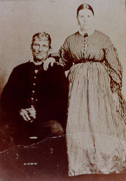
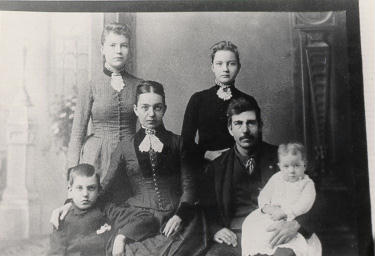
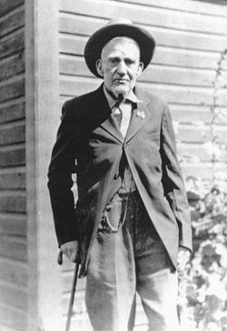
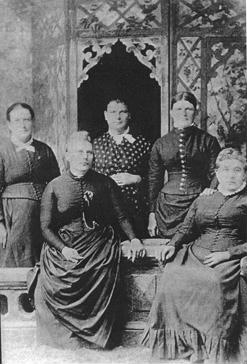

| Follow the above link to the main page for this topic or click the graphic below to visit the Homepage. |
 | Photo Gallery: The James Family The James Family History Collection |
 |
Henry (1800-1878) and Abigail (Davis) James (1813-1887), parents of Betsy, Nathan and others. Photo courtesy of Margaret Pontius and Thomas James. Back Button to Return. |
 |
Top left-Abbie James Morrill. Top right-Jessie James Wilkenson. Lower left-Richard (Harry) James. Lower right-Alma James. Center left-Francis Perkins James (wife of Nathan James). Center right - Nathan Howells James, son of Henry & Abigail James. Not shown- Elva James. Photo courtesy Margaret Pontius and Thomas James. Back Button to Return. |
 |
This is my favorite photo from the James Family collection. Nathan Howells James, son of Henry James (1800-1878) and Abigail Davis (1813-1887), was a brother to the Betsy Jane James that married Enos Cullen. Nathan was born April 21,1848 and married in 1870 to Francis Katherine Perkins. A photo of Nathan and his family is immediately above this photo. Nathan was in Company G 145'th Ohio Volunteers in the Civil War. He and his family moved to Lincoln, Nebraska in 1888 and then to Coupeville, Washington in 1895. Nathan died on Mar 29,1930 at Whidby Island in Washington state. Photo courtesty of Margaret Pontius. Back Button to Return. |
 |
The James Sisters. This photo is especially interesting to the Cullens since it is the second known photograph of the Betsy James that married Enos Cullen back in 1855/6. The names of the sisters are: standing; Mary born 1854, Doris (?), Cindy born 1840. Seated are: Kate and Betsy Jane born 1838. More on this photo as the info comes in. Photo courtesy of Margaret Pontius. Back Button to Return. |